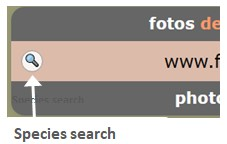
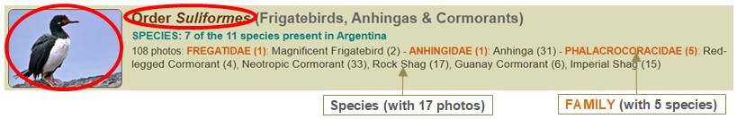

Navigation Tips
Check out how to navigate the site and make the best of your visit!
Basic structure of the bird pages:
The bird section is arranged into 3 levels:- Bird main page: Shows the entire family tree of Argentine birds, in English
- Group page: Shows species belonging to the same order, suborder, family or subfamily (bilingual English-Spanish)
- Species page: Shows 1 or more photos of a single species (bilingual English-Spanish)
- Group page: Shows species belonging to the same order, suborder, family or subfamily (bilingual English-Spanish)
Currently the site covers about 80% of birds normally recorded in Argentina, so you may find that the bird you are looking for is not present.
But before you give up, try searching with alternate names, or explore the family to see if it's there. If not, you can be sure that I'm as sorry as you are, and more so, not to have photos of every possible bird! Working on it...
Navigation features common to all pages
 |
Species Search ButtonMulti-language (English / Spanish / Scientific) name search for species represented in the site.Instantly takes you to the species page. Enter 2 or more letters to start to get results. Will show at most 12 matching results. Then click on the row to jump to the species you want. |
 |
Back-to-top ButtonThis button will appear in the bottom right-hand corner once you've scrolled down some distance.Click on it to return to the top of the page. |
Breadcrumbs

All pages show the "breadcrumbs" just below the header. Think of it as a "trail" that shows you where you are in the family-tree.
If you are in a species page, a blue link will take you to the containing "parent" group, which may be an order, suborder, family or subfamily.
Click on the Birds link to return to the birds main page, or on Home to explore other parts of the site.
Navigation features of the main Birds page
The first level of bird classification is by Orders. But some orders are so large, that it's sometimes better to break then down:
- Into Suborders (as is the case of the shorebirds - Charadriiformes)
- Into Families (to give better visualization of iconic groups, such as swifts, hummingbirds, toucans and woodpeckers
- The very large Passeriformes order shows all families and sometimes even Subfamilies (notably for the Furnariidae).
So depending on the case, you can navigate by "drilling down" to group level. Click on the image or the group name, as marked in red in the image below. This illustration also shows how to interpret the detailed information provided for each group.

Navigation features at Group Level
Table of Contents
The page begins with a table showing all species contained in the group (in English, Spanish and scientific names).If the group is an order or suborder, the table will show the family divisions.
Click on the species you wish to see, and the page will scroll down to it.

Group pages normally show only one photo of each bird species in the group. However, in species with sexual dimorphism (when the male and female are different), there will usually be 2 photos (always assuming that photographic material is available!).
Enlarge the image
Click on the photo to enlarge the image. Then click on the black frame, or the "X" in the lower right, to make it small again.Access the Species Page
When available, you can go to species page to see more photos of that bird. Click on the More photos... button below the last image.
Navigation features at Species Level
Enlarge the image and browse through them all
As before, you can click on the image to enlarge the photo. But now you can also click on the ">" symbol on the right edge of the photo (encircled in red below), or "<" on the left edge, (or use the left and right keyboard arrows) to browse the rest of the images, viewing them all in the enlarged size. Note that for the left or right arrows to show, the mouse must be hovering over the image, on the left or right side, respectively.
When viewing images this way, the location and date information of each photo will be visible on the left, below the image.
Below that is a counter that shows how many images are left, or if you've reached the end.

Moving on, if at the end of the page you come across smaller "slide-like" photos, these are usually older stock, but can also contain some pretty good pictures.
You can navigate them in a similar way, by enlarging and browsing, but they will run by a separate counter.
Return to the start of the page by clicking on the round "back-to-top" button, and then use the breadcrumb links to continue exploring the site.
Now, go visit the site, look at some birds, and enjoy the experience!